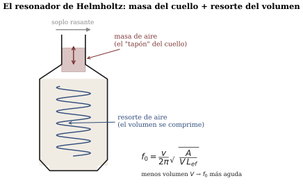

Resonancia, impedancia y acoplamiento
Sesión 10 · Curso Acústica Musical UC Objetivos que cubre: OA1.2 (predecir el efecto de un parámetro sobre la afinación de un resonador y contrastarlo), OA1.3 (mecanismos de excitación y siembra del régimen de oscilación), OA3.2 (conectar sensación, mecanismo y medición — la clínica), OA5.2 (hito 2). Notación local: f_0 = frecuencia propia de un resonador (cuando el sistema tiene varias, son las frecuencias características de s03; aquí trabajamos con una a la vez).
¿Por qué el columpio solo acepta su ritmo?
Desde s03 sabemos que cada objeto, dejado en paz, vibra en SUS frecuencias características y decae. A eso lo llamamos oscilación libre: usted golpea la sartén, la sartén responde con su acorde propio y se apaga. La sesión 10 hizo la pregunta opuesta: ¿qué pasa si no lo dejo en paz? ¿Si lo empujo periódicamente a la frecuencia que YO elijo?
El columpio de plaza es el laboratorio perfecto (Benade 1990, sec. 10.1). Tiene una frecuencia propia f_0 — el vaivén con que oscila solo — y usted puede empujarlo al ritmo que quiera. Si empuja mucho más lento o mucho más rápido que f_0, el columpio responde poco y “forcejea”: sus empujones llegan a veces a favor y a veces en contra del movimiento, y en promedio se cancelan. Pero si empuja exactamente a f_0, cada empujón llega en el momento justo, todos suman, y una fuerza pequeña acumula una oscilación enorme. Eso es la resonancia: la respuesta de un sistema forzado es máxima cuando la frecuencia de excitación coincide con su frecuencia propia.
En la demo lo oímos como el “hinchazón”: un tono de excitación que sube parejo casi no logra mover al resonador… hasta que pasa por f_0 y la respuesta se infla. La escucha del día cobró así el ticket de s09: lo que determina que un sistema “prefiera” sus frecuencias no es terquedad, es aritmética de empujones — solo en f_0 los aportes de la fuerza se acumulan en lugar de cancelarse.
La curva de respuesta: el pico y su precio
Si tabulamos la amplitud de respuesta para cada frecuencia de excitación obtenemos la curva de respuesta del resonador: baja lejos de f_0, con un pico centrado en f_0. Lo interesante no es solo dónde está el pico sino qué tan ancho es, y eso lo decide el amortiguamiento — el roce que le roba energía a la vibración en cada ciclo.
Un resonador muy amortiguado (la bandeja de lata bien sujeta, un columpio con frenos) tiene un pico bajo y ancho: responde “más o menos” a muchas frecuencias vecinas. Un resonador poco amortiguado (una copa de cristal) tiene un pico alto y angosto: responde muchísimo, pero solo si usted le acierta casi exactamente a f_0 (figura 1).
 Benade (1990, sec. 10.7) midió esto en una bandeja de lata; la versión doméstica la conoce cualquier músico: ese objeto de la sala que zumba solo cuando la orquesta toca UNA nota concreta es un resonador de pico angosto al que esa nota le acierta.
Benade (1990, sec. 10.7) midió esto en una bandeja de lata; la versión doméstica la conoce cualquier músico: ese objeto de la sala que zumba solo cuando la orquesta toca UNA nota concreta es un resonador de pico angosto al que esa nota le acierta.
Hay una segunda cara, y es la misma moneda: el transiente de ataque. Un resonador no responde instantáneamente; tarda en “creer” que la excitación va en serio, acumulando energía empujón a empujón. Y la regla es simétrica al decaimiento: el resonador de pico angosto (poco roce) tarda mucho en arrancar y, cuando lo sueltan, su ping libre dura mucho; el de pico ancho arranca al tiro y muere al tiro (Benade 1990, secs. 10.2–10.3). En la demo, el slider de amortiguamiento hace las dos cosas A LA VEZ — angosta el pico y alarga el transiente — porque no son dos fenómenos sino uno. Musicalmente esto importa: gran parte de lo que reconocemos como “el ataque” de un instrumento es el tiempo que sus resonadores tardan en establecerse (Benade 1990, sec. 10.8).
Recuadro opcional (para quienes vienen de ingeniería). El ancho del pico a media potencia y el tiempo de decaimiento son recíprocos: \Delta f \cdot \tau \approx constante del orden de 1 (según cómo se definan ambos). Un factor de calidad Q = f_0/\Delta f alto significa pico angosto, transiente largo y decaimiento largo. La demo usa un resonador de segundo orden con Q entre ~4 y ~100. El detalle formal está en C&G cap. 5 (pp. 183–202) y ROS cap. 2 y 4.
¿Por qué la cuerda sola casi no suena?
El experimento del elástico dejó la pregunta central del bloque C. Un elástico estirado y pulsado en el aire vibra visiblemente… y casi no se oye. Puesto sobre una caja de cartón, suena claramente. ¿Qué cambió?
La cuerda (o el elástico) es delgada: corta el aire en lugar de empujarlo, como remar con un cuchillo. Para el aire, la cuerda es además “dura de mover”: vibra con mucha fuerza y poco desplazamiento útil. Esa resistencia a ser puesto en movimiento — cuánta fuerza cuesta lograr cuánta velocidad — es la idea de impedancia, y el problema de la cuerda es que su impedancia no calza con la del aire: la energía se queda atrapada en la cuerda, que vibra largo rato para nadie.
La caja arregla el calce. La cuerda apoya su vibración en la tapa (en un instrumento real, a través del puente), la tapa es grande y liviana frente al aire, y empuja mucho aire con poca fuerza. El puente actúa como un transformador: convierte la vibración fuerte-y-chica de la cuerda en la vibración suave-y-grande que el aire sí acepta (C&G cap. 5, pp. 183–202). A esto lo llamamos acoplamiento: qué tan bien fluye la energía de un sistema vibrante a otro (figura 2).

Y aquí está la moraleja que el gancho hizo audible: la caja no agrega energía — usted le dio a la cuerda toda la que habrá, en el pulso inicial (s06: sonar más fuerte es transferir energía más rápido). Si la caja logra que esa misma energía se convierta en sonido más intenso, solo puede hacerlo gastándola antes: el elástico sobre la caja suena más fuerte y dura menos. Todo instrumento de cuerda vive en ese compromiso — el banjo lo resuelve hacia fuerte-y-corto, la guitarra hacia un punto medio — y el piano tiene su propia solución elegante que puede leer en Benade (1990, cap. 17).
La botella que canta: un resonador que se deja medir
El taller tomó el caso estrella: la botella soplada, el resonador de Helmholtz (ROS cap. 4). Aunque no lo parezca, la botella es un masa-resorte de aire: el aire del cuello es la masa que sube y baja como tapón, y el aire del cuerpo es el resorte que se comprime y la devuelve. Como todo masa-resorte, tiene UNA f_0 grave y nítida (figura 3).

Las dos predicciones del taller tenían trampa cruzada, y las mediciones del curso la confirmaron:
- Soplando, agregar agua sube la nota: el agua no participa de la vibración — solo achica el volumen de aire, y un resorte de aire más corto es más rígido, así que f_0 sube.
- Golpeando, agregar agua baja la nota: ahí quien vibra es el vidrio con su contenido, y el agua es masa agregada que lo alenta (lo mismo que la sartén cargada de s03).
La misma botella, dos resonadores distintos según a quién le entrega la energía la excitación. Esa es, en una frase, la física de todas las familias de instrumentos.
Recuadro opcional: la fórmula de Helmholtz. Para un cuello de área A y largo efectivo L_{ef} sobre un volumen de aire V, f_0 = \frac{v}{2\pi}\sqrt{\frac{A}{V\,L_{ef}}} con v \approx 343 m/s a 20 °C. De aquí sale una predicción semicuantitativa comprobable con la guía del taller: dejar la mitad del aire multiplica f_0 por \sqrt{2} — unos 6 semitonos, un tritono, no la octava que la intuición sugiere. Compare con su tabla.
El mapa del bloque C: cuatro maneras de entregar energía
Con resonancia y acoplamiento en la mano, el curso puede ordenar los instrumentos por su mecanismo de excitación — cómo le llega la energía al resonador (OA1.3):
Golpear o pulsar (ya lo hicimos, s03–s04): energía de una vez, oscilación libre, sonido que nace fuerte y decae. Frotar (s11), soplar (s12) y cantar (s13): energía continua, y aquí aparece algo cualitativamente nuevo. La botella soplada no recibe empujones periódicos de nadie — el soplo es parejo — y sin embargo suena una nota estable. Es el propio resonador el que organiza al flujo de aire para que lo alimente a SU ritmo: una oscilación auto-sostenida, que Benade estudia bajo el nombre de régimen de oscilación (Benade 1990, sec. 20.2). La sesión solo sembró la idea; s11 y s12 la desarrollan, y el ticket de salida ya la está rondando: si el arco entrega energía todo el tiempo, ¿quién le pone el ritmo a la cuerda?
Síntesis
- Oscilación libre: el sistema vibra en su f_0 y decae. Forzada: responde a la frecuencia impuesta, pero con amplitud grande solo cerca de f_0 — eso es la resonancia, y la curva de respuesta la retrata.
- El amortiguamiento tiene dos caras inseparables: pico ancho ↔︎ transiente y decaimiento cortos; pico angosto ↔︎ arranque lento y ping largo.
- Impedancia: qué tan “duro de mover” es un sistema. Acoplamiento: qué tan bien fluye la energía entre sistemas; el puente y la caja son el transformador de la cuerda al aire, y el precio de sonar más fuerte es durar menos.
- La botella soplada (Helmholtz) y golpeada son dos resonadores en un objeto: el sonido depende de a quién se le entrega la energía.
- Bloque C: excitación impulsiva (visto) / frotada (s11) / soplada (s12) / cantada (s13); con energía continua aparecen las oscilaciones auto-sostenidas (régimen de oscilación).
Hacia la sesión 11
Traiga la pregunta del ticket madurada: el arco no golpea — alimenta a la cuerda sin pausa — y aun así la cuerda elige una nota estable y un movimiento de una precisión asombrosa, que Helmholtz vio antes de que nadie pudiera filmarlo. En s11 lo veremos con instrumentos de verdad: quien tenga violín, viola, cello o guitarrón, coordinado en clase, lo trae (1–2 por curso bastan). El objeto del proyecto descansa hasta s12, pero sus compromisos de clínica — el mapa de resonancias incluido — corren por bitácora.
Referencias y lectura complementaria
- Benade, A. H. (1990). Fundamentals of Musical Acoustics, 2.ª ed. Dover — cap. 10 completo (secs. 10.1–10.8 y EEQ 10.9): péndulo, transientes, amortiguamiento, bandeja de lata, implicancias musicales; sec. 20.2 (regímenes de oscilación, sembrada aquí); cap. 17 (la solución del piano al compromiso fuerte/largo).
- Campbell, M. & Greated, C. (1987). The Musician’s Guide to Acoustics. Oxford UP — cap. 5, pp. 183–202: resonancia, impedancia y acoplamiento (el capítulo puente hacia los instrumentos).
- Rossing, T. D., Moore, F. R. & Wheeler, P. A. (2002). The Science of Sound, 3.ª ed. — cap. 4 (secs. 4.1–4.11: resonancia, impedancia, resonador de Helmholtz, autoexcitación) y cap. 2 (sistemas vibrantes y amortiguamiento); ejercicios numéricos de ambos.
- Roederer, J. G. (1997). Acústica y Psicoacústica de la Música. Ricordi — cap. 4, sec. 4.3 (espectros y resonancia; pp. 120–179 del cap. 4). En español.